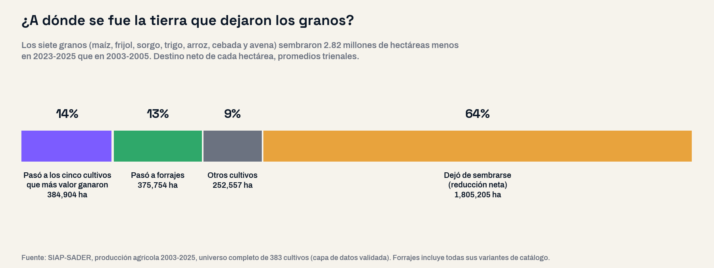
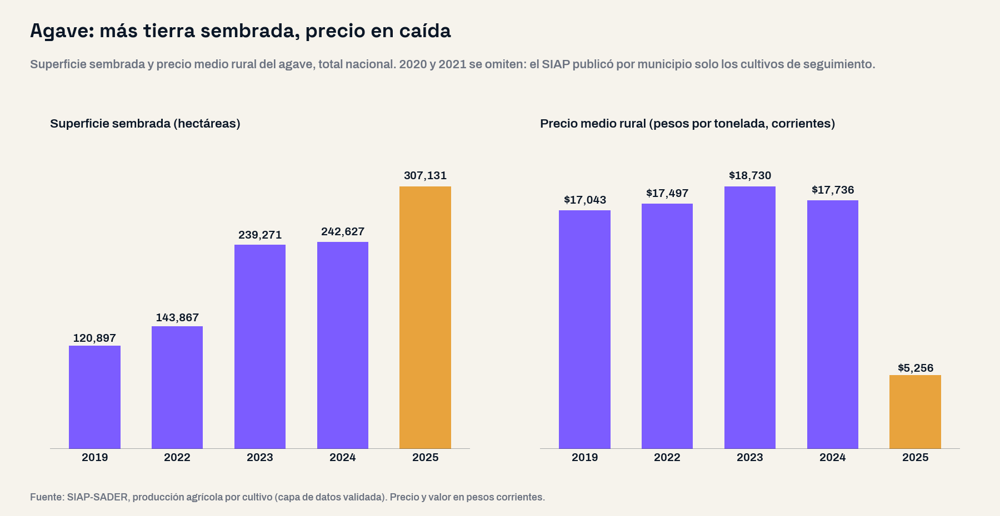

La pregunta con la que arrancó este análisis fue abierta: ¿qué cultivos ganaron y cuáles perdieron tierra en México en los últimos veinte años, y en qué municipios se concentró el cambio? Sin preseleccionar cultivos ni regiones: los 383 cultivos que registra el Servicio de Información Agroalimentaria y Pesquera (SIAP), ordenados por su cambio entre el promedio de 2003-2005 y el de 2023-2025, y bajados a los 2,451 municipios con registro. Se usan promedios de tres años para que una sequía o un año de lluvias atípicas no decida la comparación.
Un campo más chico
En 2003-2005 México sembraba en promedio 21.76 millones de hectáreas al año; en 2023-2025, 19.95 millones. Son 1.81 millones de hectáreas menos, una reducción de 8.3%. No es solo efecto de los años recientes: en 2017-2019 la superficie sembrada ya era 617 mil hectáreas menor que al inicio del periodo.
La reducción alcanza a 21 de las 32 entidades. Encabezan Sinaloa (−462,494 hectáreas, -35.8%), Guanajuato (−286,492, -25.3%) y Chiapas (−269,446). En Sinaloa el promedio reciente pesa por un desplome concentrado en dos años: sembró 1.02 millones de hectáreas en 2023 y 700 mil en 2025.
| Entidad | Superficie sembrada 2003-2005 (ha) | 2023-2025 (ha) | Cambio (ha) | Cambio | Cambio en granos (ha) |
|---|---|---|---|---|---|
| Sinaloa | 1,290,821 | 828,327 | −462,494 | -35.8% | −362,885 |
| Guanajuato | 1,131,183 | 844,690 | −286,492 | -25.3% | −353,938 |
| Chiapas | 1,612,681 | 1,343,235 | −269,446 | -16.7% | −241,458 |
| Zacatecas | 1,249,831 | 1,012,424 | −237,406 | -19.0% | −276,763 |
| Tamaulipas | 1,423,281 | 1,247,218 | −176,064 | -12.4% | −198,011 |
| México | 905,398 | 742,158 | −163,241 | -18.0% | −123,852 |
| Durango | 703,778 | 581,090 | −122,687 | -17.4% | −143,896 |
| Nuevo León | 396,509 | 292,474 | −104,036 | -26.2% | −85,098 |
Los granos cedieron 2.82 millones de hectáreas
La tierra que se perdió salió de los granos. Maíz, frijol, sorgo, trigo, arroz, cebada y avena ocupaban 60.3% de la superficie sembrada del país y hoy ocupan 51.6%. El maíz grano sembró 1.38 millones de hectáreas menos (-16.9%), el sorgo 686 mil (-34.5%) y el frijol 489 mil (-26.2%).
| Cultivo | Superficie 2003-2005 (ha) | 2023-2025 (ha) | Cambio (ha) | Cambio en volumen |
|---|---|---|---|---|
| Maíz grano | 8,169,688 | 6,785,165 | −1,384,523 | +24% |
| Sorgo grano | 1,985,504 | 1,299,985 | −685,518 | −30% |
| Frijol | 1,869,683 | 1,380,197 | −489,486 | −9% |
| Trigo grano | 604,192 | 457,024 | −147,168 | −3% |
| Cártamo | 167,730 | 38,069 | −129,661 | −61% |
| Café cereza | 793,075 | 700,598 | −92,477 | −35% |
| Aguacate | 103,973 | 265,371 | +161,398 | +193% |
| Caña de azúcar | 697,121 | 850,956 | +153,835 | +10% |
| Agave | 144,135 | 263,010 | +118,875 | +177% |
| Nuez | 65,921 | 167,299 | +101,378 | +120% |
| Limón | 142,061 | 227,792 | +85,731 | +80% |
| Palma africana o de aceite | 32,957 | 111,685 | +78,728 | +525% |
| Forrajes (todas las variantes) | 3,890,864 | 4,266,618 | +375,754 | — |
¿A dónde se fue esa tierra? En el saldo nacional, solo 14 de cada 100 hectáreas que dejaron los granos pasaron a los cinco cultivos que más participación ganaron en el valor agrícola —aguacate, agave, limón, frambuesa y fresa—; 13 pasaron a forrajes y 9 a otros cultivos. Las 64 restantes dejaron de sembrarse.

Menos tierra, más maíz; menos frijol
Menos superficie no significó menos maíz. La producción de maíz grano subió 23.6%, de 20.6 a 25.4 millones de toneladas anuales en promedio, porque el rendimiento pasó de 2.83 a 3.88 toneladas por hectárea cosechada. En el mismo periodo, la proporción de maíz sembrado con riego subió de 15.7% a 19.3%. Otros cultivos no compensaron: el frijol produce 9% menos, el sorgo 30% menos y el café cereza 35% menos que hace veinte años.
La expansión cupo en 33 municipios
Del lado de los cultivos que crecen, la geografía se estrecha. De los 971 municipios donde aumentó la superficie de los cinco cultivos, 33 concentran la mitad de la expansión. En aguacate, 14 municipios suman la mitad de las hectáreas nuevas: 11 de Michoacán —Ario, Salvador Escalante, Tancítaro y Tacámbaro a la cabeza—, dos de Jalisco y uno de Nayarit. En agave bastan 10: Pénjamo, Romita, Manuel Doblado y Abasolo, en Guanajuato; La Barca, Zapotlán del Rey, Poncitlán, Jamay y Ocotlán, en la Ciénega de Jalisco, y Rosario, en Sinaloa.
La retirada de los granos, en cambio, se reparte: el maíz perdió superficie en más de 1,500 municipios y hacen falta más de 100 para juntar la mitad de esa pérdida. La expansión llega a pocos territorios; la contracción, a casi todos.
Ese cruce —SIAP 2003-2025 con la medición municipal de pobreza de CONEVAL 2020— no estaba en la pregunta inicial y se declara como tal: son dos fuentes distintas, y la pobreza es una fotografía de 2020, no la causa del cambio. El corte está en 63% de población en pobreza. Lo que muestra es que el reacomodo —la salida de granos y la llegada de cultivos de mayor valor— ocurrió sobre todo en los municipios agrícolas menos pobres; en los más pobres, la agricultura siembra casi la misma tierra que hace veinte años y recibió 15% de la expansión.
Alerta: el agave ganó tierra y perdió precio
El agave obliga a leer el valor agrícola con cuidado. Su superficie sembrada nacional pasó de 120,897 hectáreas en 2019 a 242,627 en 2024 y a 307,131 en 2025. En 2025 su precio medio rural cayó de $17,736 a $5,256 por tonelada (-70%) y el valor de su producción bajó de $43,173 a $15,799 millones de pesos corrientes (-63%).

Guanajuato duplicó su superficie de agave en un solo año —de 53,723 a 108,808 hectáreas— mientras su precio medio rural caía 79%. En Jalisco, el agave pasó de generar 22.9% del valor agrícola estatal en 2024 a 9.1% en 2025. Y cada año se cosecha una fracción de lo sembrado: 40,975 de 307,131 hectáreas en 2025. La superficie que hoy crece es la producción de los próximos años, que llegará a un precio que ya cayó.
Michoacán plantea la misma pregunta con un cultivo de precio más estable: el aguacate generó 42.3% del valor agrícola del estado en 2025, y los cinco cultivos juntos, 62.1% en el promedio 2023-2025. Es una vocación productiva exitosa y, al mismo tiempo, una dependencia sectorial que ningún plan estatal debería dar por sentada.
Implicaciones para la gestión pública
1. El diagnóstico agrícola se hace con la serie propia. Un municipio que describe su vocación con el cultivo de siempre puede estar describiendo un campo que ya no existe. El SIAP publica superficie, volumen, valor y precio por cultivo y municipio cada año; nuestra guía del plan municipal de desarrollo parte de ese principio: cada diagnóstico con el dato de su propio territorio.
2. Vigilar el precio, no solo la superficie. El caso del agave muestra que un cultivo puede crecer en hectáreas y perder la mayor parte de su valor en un año. En los municipios donde un solo cultivo genera la mayor parte del valor agrícola, el riesgo es el mismo que describimos en el mapa de vulnerabilidad de los municipios ante una crisis sectorial.
3. Preguntar qué pasó con la tierra que dejó de sembrarse. El SIAP registra lo que se siembra, no qué ocurrió con los 1.81 millones de hectáreas que salieron del registro: si quedaron ociosas, se volvieron agostadero o cambiaron de uso. Esa respuesta solo existe en el territorio, y es insumo directo para el ordenamiento y la planeación rural.
4. Abasto de granos: el dato no es uniforme. El maíz produce más con menos tierra; el frijol y el sorgo producen menos. Una política estatal de abasto que hable de «granos» en general mezcla trayectorias opuestas.
5. La reconversión productiva necesita escenario de precio. En los 10 municipios que concentran la mitad de la expansión del agave, la superficie de granos bajó en todos. El agave es la base de la cadena del tequila que analizamos en Jalisco. Cualquier programa que acompañe una reconversión debería incluir qué pasa si el precio cae, porque en 2025 cayó.
Conclusión
En veinte años el campo mexicano se hizo más chico, más productivo en maíz y más concentrado en valor. Los granos cedieron 2.82 millones de hectáreas, más de seis de cada diez dejaron de sembrarse, la expansión de los cultivos de mayor valor cupo en 33 municipios y el más expansivo de ellos perdió 70% de su precio en 2025. Para un gobierno municipal o estatal, la pregunta útil no es si su campo produce más o menos, sino qué siembra hoy, de qué precio depende y qué pasó con la tierra que dejó de sembrar. Las tres respuestas se consultan municipio por municipio.
¿Qué siembra hoy tu municipio?
En la plataforma de GDI puedes consultar la superficie, el volumen, el valor y el precio de cada cultivo de tu municipio desde 2003, junto con el empleo formal, la medición de pobreza, las finanzas públicas y la demografía, para armar el diagnóstico de tu plan de desarrollo con fuentes oficiales integradas.
Explorar mi territorioPreguntas frecuentes
¿Cuánta tierra dejó de sembrarse en México en veinte años?
La superficie sembrada pasó de 21.76 millones de hectáreas en promedio en 2003-2005 a 19.95 millones en 2023-2025: 1.81 millones menos, una reducción de 8.3%. La mayor parte de la caída salió de los granos, que sembraron 2.82 millones de hectáreas menos.
¿México produce menos maíz que hace veinte años?
No. Siembra 1.38 millones de hectáreas menos de maíz grano, pero produce 23.6% más: 25.4 millones de toneladas anuales en 2023-2025 contra 20.6 millones en 2003-2005, porque el rendimiento subió de 2.83 a 3.88 toneladas por hectárea cosechada. El frijol, en cambio, produce 9% menos.
¿Qué cultivos ganaron más tierra?
Sin contar forrajes, encabezan el aguacate (+161,398 hectáreas), la caña de azúcar (+153,835), el agave (+118,875), la nuez (+101,378) y el limón (+85,731). Aguacate, agave, limón, frambuesa y fresa son los cinco que más participación ganaron en el valor agrícola nacional.
¿Qué pasó con el precio del agave en 2025?
Según el SIAP, el precio medio rural del agave bajó de $17,736 a $5,256 por tonelada entre 2024 y 2025 (-70%), mientras su superficie sembrada subió de 242,627 a 307,131 hectáreas. En Guanajuato la superficie se duplicó y el precio cayó 79%.
Datos técnicos
Fuentes: SIAP-SADER, estadística de producción agrícola 2003-2025 por cultivo, a nivel nacional, estatal y municipal; CONEVAL, medición municipal de la pobreza 2020 (solo para el cruce señalado en el texto). Ambas consultadas en la capa de datos validada de Lokus. Universo completo: los 383 cultivos del catálogo y los 2,451 municipios con registro en alguno de los dos periodos, sin preselección. Los totales nacional, estatal y municipal cuadran entre sí al 100%.
Método: comparación de promedios trienales 2003-2005 contra 2023-2025 para suavizar años climáticos atípicos; control con 2017-2019. Granos = maíz grano, frijol, sorgo grano, trigo grano, arroz palay, cebada grano y avena grano. Cinco cultivos = los cinco con mayor aumento de participación en el valor agrícola nacional entre ambos periodos, ordenando el universo completo: aguacate, agave, limón, frambuesa y fresa. Participación en el valor = valor del cultivo entre valor agrícola total del mismo año, por lo que no depende de la inflación. Forrajes agrupa todas sus variantes (verde, seco, achicalado), porque el catálogo del SIAP reclasificó varias de ellas desde 2012.
Advertencias metodológicas: en 2020 y 2021 el SIAP publicó a nivel municipal solo los cultivos «de seguimiento» (80, contra cerca de 300 del resto de los años); los demás se publicaron solo por entidad, por lo que esos dos años se excluyen de las series para conservar la comparación municipal. Precios y valores en pesos corrientes, no deflactados. La superficie sembrada de cultivos perennes como el agave y el aguacate incluye plantaciones que aún no producen. En la comparación municipal, 32 municipios no tienen registro en el periodo inicial, en su mayoría de creación reciente; los municipios de los que se separaron pueden mostrar caídas por cambio de límites, por lo que los conteos municipales se redondean a la baja. El cruce con pobreza usa la medición 2020 como característica del municipio, no como causa.
Clasificación SCIAN (correspondencia aproximada; el SIAP clasifica por cultivo, no por sistema de producción): 111 Agricultura — 11115 Cultivo de maíz · 11113 Cultivo de leguminosas (frijol) · 11119 Cultivo de otros cereales (sorgo, cebada, avena) · 11114 Cultivo de trigo · 11116 Cultivo de arroz · 11133 Cultivo de frutales no cítricos y de nueces (aguacate, frambuesa, fresa, nuez, café) · 11132 Cultivo de otros cítricos (limón) · 11193 Cultivo de caña de azúcar · 11194 Cultivo de alfalfa y pastos · 11199 Otros cultivos (agave).
Nota: el análisis partió de una pregunta abierta y del universo completo de cultivos y municipios ordenado por la métrica; los grupos y el patrón emergen de los datos, no de una clasificación previa.
Análisis: GDI — Gobierno Digital e Innovación · Fecha de análisis: 18 de septiembre de 2026 · gobiernodigitaleinnovacion.com